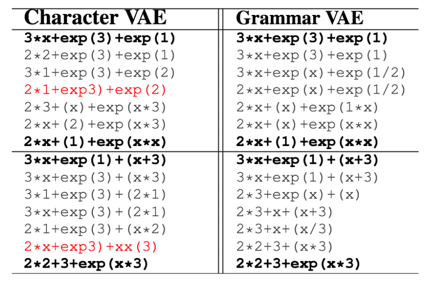

Grammar Variational Autoencoder
Мотивация
Авторы статьи ставят задачу обучать вариационные автокодировщики для строк, которые задаются контекстно-свободной грамматикой (компьютерные программы, арифметические выражения, формулы молекул). Проблема применения к ним обычных character-based VAE в том, что часто строка, сгенерированная из некоторого вектора внутреннего представления, не является валидной, то есть не выводится из грамматики. Предлагается новая модель Grammar VAE, которая всегда генерирует валидные строки.
Описание модели
Напоминание. Контекстно-свободная грамматика задается четверкой: $ V$ – множество нетерминалов, \(\Sigma\) – множество терминалов (алфавит символов строки), \(S\) – выделенный стартовый нетерминал и \(R\) – множество правил вывода вида \(\alpha \rightarrow \beta\), \(\alpha \in V\), \(\beta \in (V \cup \Sigma)^*\), все множества конечны. Каждая строка порождается цепочкой правил вывода, причем в первом правиле слева стоит \(S\), а каждое правило применяется к самому левому подходящему нетерминалу в текущем виде строки. Пример тут.
Кодировщик: \(q(z|x)\). Вместо того, чтобы работать со строкой как с последователньостью символов, будем представлять строку в виде цепочки правил вывода и обозначать \(x\). Обозначим длину этой цепочки \(T(x)\), а \(K=|R|\) – число правил вывода. Тогда цепочка \(x\) может быть задана в виде бинарной матрицы размера \(T(x) \times K\), у которой в каждой строке ровно 1 единица (соответствующая применяемому правилу). В виде этой матрицы строка и подается на вход кодировщика. Предложное распределение \(q(z|x)\) стандартно задается в виде факторизованного нормального распределения со средним и дисперсией, возвращаемыми нейросетью (3 сверточных слоя и 2 полносвязных).
Декодировщик: \(p(x|z)\). Опишем сначала процесс того, как декодировщик генерирует цепочку правил \(x\) из скрытого представления \(z\), а затем запишем правдоподобие \(p(x|z)\) для этого процесса. Нам понадобится бинарная матрица \(M\) размера \(|V| \times K\), каждый элемент (\(\alpha,\, k\)) – индикатор того, что в \(k\)-м правиле вывода слева стоит нетерминал \(\alpha\). Процесс генерации начинается с того, что декодировщик пропускает \(z\) через рекуррентную нейронную сеть, которая возвращает последовательность векторов \(f_1, \dots, f_{T_{max}}\), \(f_t \in \mathbb{R}^K\). Дальше повторять \(T_{max}\) раз: достаем с верхушки стека нетерминал \(\alpha\), берем его бинарную маску \(m_\alpha\), составляем дискретное распределение над допустимыми правилами вывода:
\[ p(x_t=k|\alpha, z) = \frac{m_{\alpha, k} \, \exp(f_{t,k})}{\sum_{j=1}^K m_{\alpha, j} \, \exp(f_{t,j})}, \]
семплируем из него допустимое правило вывода, применяем его, и добавляем в стек все нетерминалы из правой части этого правила в обратном порядке. Распределение $p(x_t=k|, z) $ присваивает ненулевую вероятность только тем правилам, у которых в левой части стоит текущий нетерминал \(\alpha\). Процесс может (и, вообще говоря, должен) закончиться раньше, если на стеке не осталось нетерминалов и строка уже выведена; для этого случая вводится специальное “пустое” правило грамматики, которым заполняется остаток цепочки \(x\). Правдоподобие цепочки \(x\) для скрытого представления \(z\) задается как
\[ p(x|z) = \prod_{t=1}^{T_{max}} p(x_t|z). \]
Обучение: Модель обучается максимизацией вариационной нижней оценки
\[ \mathcal{L}(\phi, \theta, x) = \mathbb{E}_{q_\phi(z|x)} \log p_\theta(x|z) - KL(q_\phi(z|x)||p(z)), \] \(\phi\) – параметры сверточной нейросети кодировщика, \(\theta\) – параметры рекуррентной сети декодировщика, \(p(z)\) – стандартное многомерное нормальное распределение. Интеграл в матожидании берется семплированием, для получения несмещенной оценки применяется reparametrization trick.
Эксперименты
В экспериментах авторы показывают, что Grammar VAE создает более гладкие представления строк в том смысле, что при малом сдвиге в пространстве скрытых переменных мы получаем малое изменение в строке. Например, это демонстрируется на задаче “интерполяции” арифметических выражений (в каждом блоке жирные строки – две точки в пространстве скрытых представлений, строки между ними получаются в результате сдвига по отрезку между этими точками, красным выделены невалидные строки):

Количественная оценка для этих данных проводится на задаче поиска арифметического выражения, хорошо описывающего зависимость заданного вектора абсцисс от ординат (целевое свойство). Например, выражение \(x \, \sin (x)\) хорошо описывает пару векторов \((0, 1.57, 3.14)\), \((0, 1.57, 0)\). После обучения GVAE обучается еще одна дискриминативная сеть, предказывающая по \(z\), подходит ли соответствующая ей строка для пары векторов. Используя градиент этой нейросети, можно двигаться по пространству и искать хорошее \(z\). Чтобы минимизировать количество проверок найденных строк на обладание целевым свойством (для некоторых задач проверка может быть дорогостоящей), поиск строки проводится с помощью байесовской оптимизации. GVAE значительно опережает CVAE на этой задаче вновь благодаря гладкости пространства скрытых перемнных.
Аналогичные эксперименты проведены для датасета с молекулами.
Размышления
На мой взгляд, в статье две важных идеи, которые не очень новы, но применены в интеренсом контесте генерации строк из некого подмножества всех возможных строк. Первая, простая идея – рассматривать вместо строк цепочку действий из конечного множества, порождающих строку. Вторая – взять существующий процесс генерации чего-либо (в данном случае строк из скрытых представлений), записать в виде распределения (в данном случае генеративного распределения) и сделать из этого байесовскую модель.
Контекстно-свободные грамматики хорошо подходят для реализации этих идей, потому что имеют конечное и не очень большое количество правил. Можно использовать более узкий класс грамматик – регулярные грамматики. Этими двумя типами грамматик задается достаточно много типов данных. Поскольку в естественном языке (например, английском) синтаксис тоже задается контекстно-свободной грамматикой, можно использовать Grammar VAE для генерации синтаксически корректных предложений. Правда, понадобится допонительно учитывать семантику текста, добавив, к примеру, еще одну рекуррентную сеть в декодировщик, преобразующую последовательность синтаксических единиц в слова.
Авторы отдельно отмечают, что поскольку модели явно сообщается, какова структура моделируемого объекта, ей не надо выучивать это из данных (как это происходит с character based VAE), и она может сосредоточиться на выучивании семинатики данных.